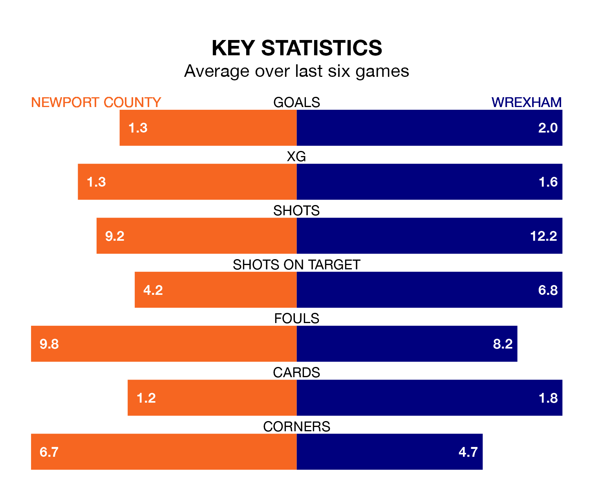

Wrexham are strong favourites to take all three points despite Newport County's home advantage in Saturday's match at Rodney Parade.
*Betting Company* are offering odds of 1.83 on Wrexham sealing the win, with the visitors sitting second in EFL League Two table.
Newport, who are 17th in the league and 18 points behind the Dragons, are priced at 3.55 to win. A draw is set at 3.65.
With 54 goals in 26 games so far this season, Wrexham are the league's third-highest scorers with 2.1 goals per game. And they are conceding fewer than average, letting in 36 goals at a rate of 1.4 per game.
Newport, meanwhile, are below average scorers, with 1.4 goals per game, compared to a league average of 1.5. They have conceded 1.7 goals per game.
In Will Evans, County have one of the league's sharpest shooters so far this season. He has notched 15 goals in 27 appearances, to sit third in the scoring charts.
His goal rate of one every 148 minutes is quicker than that of Elliott Lee, the Dragons's top scorer with a goal every 171 minutes, and a total of 13 goals in 26 games.
The Exiles are in mixed form in EFL League Two, with two wins and three draws from their last six games.
With five wins and one loss over that period, the visitors' form is much better – they have taken 15 points from 18, compared to the home team's nine.
Newport's last match was on January 13, a 1-0 win against Doncaster Rovers, with Sebastian Palmer-Houlden getting the goal for the Exiles.
Wrexham beat AFC Wimbledon 2-0 last time out, also on January 13, with Paul Philip Mullin and Steven Fletcher on the scoresheet.
Updated: 14:53 (UTC), 16/01/24